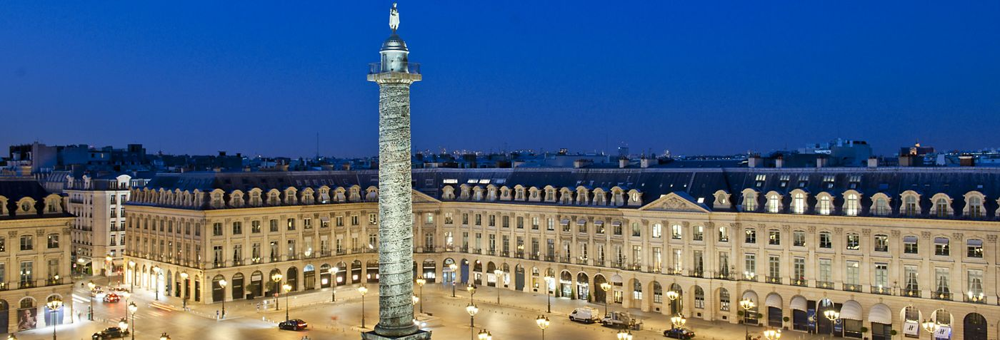
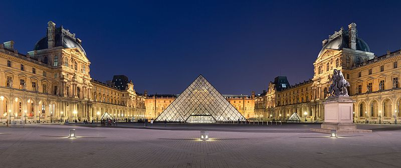

France
Paris may have the most versatile history of any of the other Security Council members.
I would visit the Louvre` and see the famous works of Da Vinci and Monet. Palace de la Bastille
was the location of the beginning of the French Revolution in 1789, and I wouldn't miss the
opportunity to have a corner table at Cafe` de Flore. All relics of an ancient city.

